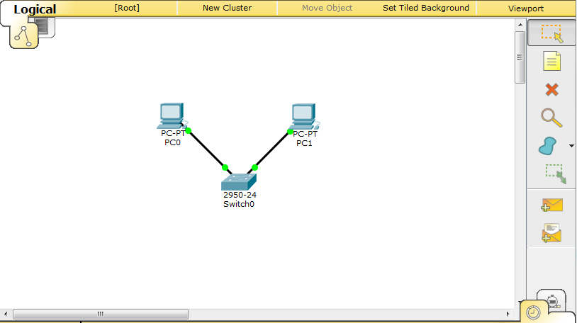
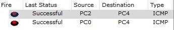
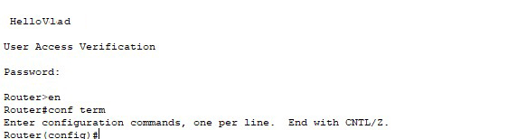

Лабораторная работа №1
Работа с Github
Задачи
-
Регистрация на GitHub.
Страница пользователя -
Создать персональную веб страницу-отчет с использованием html, css, js.
Персональная страница-отчет. - Загрузить персональную веб страницу-отчет в репозиторий ИДМ-17 по курсу "Интернет-технологии" на GitHub.
Папка с исходными кодами в репозитории.
Лабораторная работа №2
Разработка простого веб-приложения
Задачи:
- Собрать команду для разработки веб-приложения (SPA) и распределить роли.
Страница команд. - Разработать макет страницы веб-приложения.
Макет страницы. - Прописать js функционал и реализовать возможность чтения json. JS,JSON
Результат:
Работающий прототип
Лабораторная работа №3
Настройка локальной сети передачи данных
Задачи:
Настройка коммутаторов и маршрутизаторов.
Отчет по лабораторной работе. Вариант 3. Цель лабораторной работы: ознакомиться с принципами работы компьютерных сетей, базовой настройкой сетевого оборудования и статической маршрутизацией.
Расчет диапазонов сетей
| LAN A | LAN B | LAN C | |
|---|---|---|---|
| Количество хостов | 12 | 457 | 78 |
| Префиксная маска | /28 | /23 | /25 |
| Адрес подсети | 192.168.3.0 | 172.16.2.0 | 10.10.3.0 |
| Минимальный адрес | 192.168.3.1 | 172.16.2.1 | 10.10.3.1 |
| Максимальный адрес | 192.168.3.14 | 172.16.3.254 | 10.10.3.126 |
| Broadcast | 192.168.3.15 | 172.16.3.255 | 10.10.3.127 |
Для начала необходимо соединить два компьютера с помощью коммутатора Switch3. В коммутаторе был настроен Vlan A.
Затем до-бавили еще 2 компьютера и коммутатор, соединили всю конфигурацию и проверили работоспособность сети

Обмен пакетами не происходит потому, что не указан шлюз по умолчанию, после того, как мы его задали пакеты успешно доходят

Затем мы добавили еще одну сеть из нескольких устройств: маршрутизатор коммутатор и компьютер. Отправка пакетов не проходит, т.к. маршрутизаторы не знают о сетях друг друга. Необхоимо настроить статическую маршрутизацию командой ip route.
После настройки пакеты успешно доходят.


В заключение на сетевое оборудование был установлен привелегированный режим и настроены пароли на сетевых устройствах на подключение через консоль и telnet
Лабораторная работа №4
Подготовка к экзамену
Вопрос по теме "Интернет-технологии". Выберите ОДИН правильный ответ:
Зачем нужен свитч (коммутатор)?
- Соединение компьютеров согласно топологии “Звезда”
- Соединение компьютеров через WiFi
- Соединение роутеров согласно топологии “Кольцо”
- Предоставление общего доступа в сеть Интернет через NAT
Правильный ответ: 1